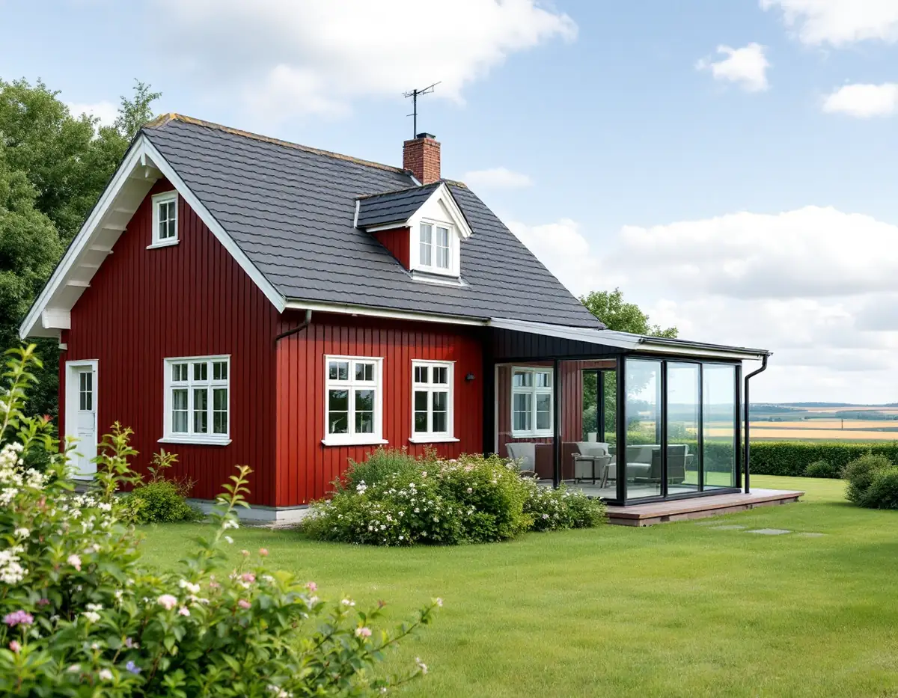
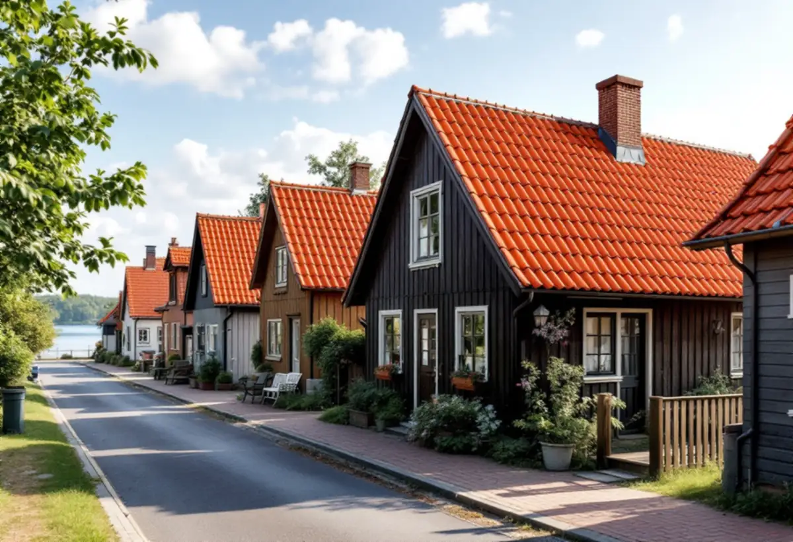

Läget
Vi ser om fastigheten ligger inom influensområdet, en detaljplan eller en kulturmiljö.
I Sigtuna kommun ligger Arlanda, och det påverkar även den som vill bygga till sitt hus. Inom flygbullrets influensområde begär kommunen ett yttrande från Swedavia innan bygglov ges. Geal Entreprenad AB tar fram handlingarna och bygger tillbyggnaden med total entreprenad.

Sigtuna kommun beskriver Arlanda som ett riksintresse enligt miljöbalken, både för dagens verksamhet och för framtida utbyggnad. Det område som påverkas av flygbullret kallas influensområdet. Vill du bygga nytt eller göra en tillbyggnad där kontaktar kommunen Swedavia för ett utlåtande innan beslutet fattas.
Bygg- och miljönämnden väger bland annat in bullersituationen, hur avloppet löses och markens radonhalt. Kommunen skriver att den ibland kan acceptera byggnation om man vidtar bullerbegränsande åtgärder, till exempel avskärmning eller isolering av byggnaden. För en tillbyggnad med sovrum kan det alltså påverka både fönster och väggar.
Kommunen skriver att huvudregeln är bygglov för tillbyggnader, men att det finns undantag. Både inom och utanför detaljplan är en tillbyggnad lovfri om den är högst 30 kvadratmeter, inte går över husets taknock och tillsammans med tidigare lovfria tillbyggnader inte blir större än 30 kvadratmeter. Lovfriheten gäller alla typer av byggnader, inte bara en- och tvåbostadshus.
Lov krävs ändå om huset ligger närmare gränsen än 4,5 meter utan grannens medgivande, inom 30 meter från ett järnvägsspårs mitt utan medgivande, eller i ett kulturhistoriskt särskilt värdefullt område. Kommunen nämner också att den som vill bygga till ett komplementbostadshus nära en flygplats som är riksintresse för totalförsvaret behöver bygglov.
Enligt kommunen räknas alla åtgärder som ökar en byggnads volym som tillbyggnad – påbyggnader, källarutgrävningar och takkupor som ökar volymen. Ett inglasat uterum eller en inglasad uteplats kan också vara en tillbyggnad, och om den inte ryms i den lovfria potten behövs bygglov. Till en sådan ansökan vill kommunen ha situationsplan, planritning, fasadritningar, en teknisk beskrivning av inglasningen och förslag till kontrollplan.
Situationsplanen ska göras på kommunens karta. Sigtuna låter dig ladda ned tomtkartan som pdf utan inloggning och utan kostnad, och sedan markeras tillbyggnaden på den. Vi tar fram ritningarna och kontrollplanen åt dig. Kontrollplanen ska enligt kommunen ange vilken fastighet det gäller och vem som är byggherre, vad som ska kontrolleras, vem som gör kontrollerna, hur de görs och dokumenteras, när i processen de görs och ha plats för datum och signatur. Den som har fått startbesked får sedan påbörja arbetet.
Kommunen skriver att tillbyggnader i en kulturmiljö ska utföras varsamt och att vissa byggnader och områden är så värdefulla att de inte får förvanskas. Där kan bygglov krävas även för tillbyggnader som annars är lovfria. För Sigtuna stad finns en bevarande- och förnyelseplan, och för dalgången mellan Odensala och Hova finns egna riktlinjer.
Kommunens råd är att behålla formspråk, proportioner och karaktärsdrag, att ge akt på fasader, tak, fönster och entréer och att bevara ursprungliga material eller byta mot samma material. Om tillbyggnaden påverkar husets bärande konstruktion, brandskydd eller ventilation väsentligt krävs anmälan, och arbetet får börja först efter startbesked. Vill du hellre bygga ett fristående hus beskriver vi det under attefallshus i Sigtuna.

Vi ser om fastigheten ligger inom influensområdet, en detaljplan eller en kulturmiljö.
Huset och tidigare tillbyggnader mäts vid ett gratis besök.
Tomtkarta, ritningar, konstruktion och kontrollplan tas fram.
Ansökan eller anmälan skickas via kommunens e-tjänst.
Grund, stomme, tak och anslutning, med bulleråtgärder där det behövs.
Den nya delen tas i bruk efter slutbesked.
Rotavdraget gäller arbetskostnaden, inte material. Skatteverket räknar en tillbyggnad av ett bostadshus som rotarbete om någon av dess sidor sitter ihop med husets yttervägg till minst 75 procent eller om en dörr förbinder de två delarna.
Bostaden ska vara äldre än fem år och större delen av den ursprungliga stommen ska behållas. Där avdraget gäller drar Geal det direkt på fakturan.
Storlek och grundläggning, bullerdämpande fönster och väggar där det krävs, anslutningen mot befintligt tak och fasad, installationer och omfattningen av handlingarna. Efter ett gratis platsbesök får du ett skriftligt kostnadsförslag.
Mer boyta i samma hus.
Tillbyggnad →Takbyte, takbesiktning och plåtarbeten.
Takläggare i Sigtuna →Sigtuna stad, Märsta och Arlanda.
Takrenovering i Sigtuna →Potten, Arlanda och gårdshusen.
Attefallshus i Sigtuna →Anmälan, fläkt och dusch i stället för badkar.
Badrumsrenovering i Sigtuna →Nytt hus, gästhus och större tomt.
Byggföretag i Sigtuna →Gatufasad, gårdsfasad och uthus i stadskärnan.
Fasadmålning i Sigtuna →Puts i stadskärnan, panel i dalgången.
Fasadrenovering i Sigtuna →Arlanda, ljudisolering och fönster i Sigtuna.
Fönsterbyte i Sigtuna →Bevarandeplanen, gammalt glas och fönsterkulörer.
Fönsterrenovering i Sigtuna →Golv på platta, fuktmätning och radon.
Golvläggare i Sigtuna →Plankgolv i äldre trähus.
Golvslipning i Sigtuna →Ventilation, avlopp och anmälan.
Köksrenovering i Sigtuna →Stadskärnan, Märsta och Rosersberg.
Målare i Sigtuna →Plåttak, rännor och beslag i Sigtuna.
Plåtslagare i Sigtuna →Staket, dörrar och gårdshus i stad och dalgång.
Snickare i Sigtuna →Lov, checklista och gårdarnas tegel.
Takbyte i Sigtuna →Ny tapet i äldre trähus.
Tapetsering i Sigtuna →Ventilation, VA och kulturmiljö.
Totalrenovering i Sigtuna →